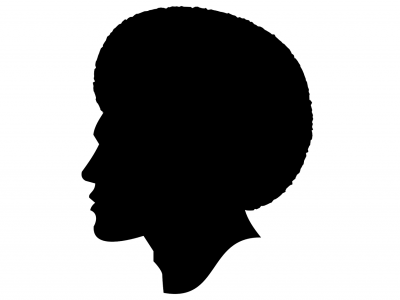

O que é o movimento negro:
Ao tentar entender o Movimento Negro, é comum encontrar termos específicos usados pelos ativistas. Seja nas redes sociais ou em notícias e protestos, expressões como “lugar de fala” e “interseccionalidade" podem gerar dúvidas. Isso acontece porque os movimentos sociais alimentam e são alimentados por longos estudos sobre a sociedade, que cunham expressões que identificam fenômenos sociais específicos daquela vivencia.
Como Surgiu no Brasil:
O movimento negro começou a surgir no Brasil durante o período da escravidão. Para defender-se das violências e injustiças praticadas pelos senhores, os negros escravizados se uniram para buscar formas de resistência.
Ao longo dos anos, o movimento negro se fortaleceu e foi responsável por diversas conquistas desta comunidade, que por séculos foi injustiçada e cujos reflexos das políticas escravocratas ainda são visíveis na sociedade atual.
Dias de hoje:

Após a abolição, os negros passaram a habitar guetos e comunidades, como forma de proteção, e em razão da falta de oportunidades.
Entre as reivindicações do movimento negro hoje em dia está a compensação por todos os anos de trabalho forçado e à falta de inclusão social após esse período a falta de políticas públicas destinadas a maior presença do negro no mercado de trabalho e nos campos educacionais.
Também, a efetiva aplicabilidade das leis que buscam a criminalização do racismo e a plena aceitação e respeito à cultura e herança histórica.
Atualmente existem diferentes vertentes do movimento negro. Duas correntes mais amplas são o Movimento Negro Unificado e o Movimento Negro Empoderado. O Movimento Negro Unificado tem suas origens na histórica luta que se iniciou nos períodos da escravidão e intensificou-se na década de 1960 em todo o mundo, sobretudo por inspiração de personalidades estadunidenses engajadas na luta, como Martin Luther King Junior, Malcom X, James Baldwin e Angela Davis.